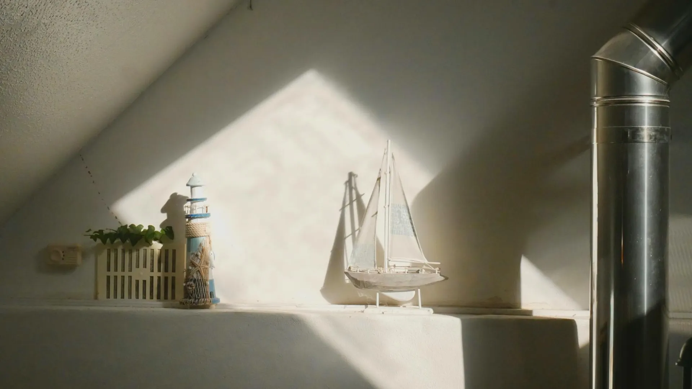
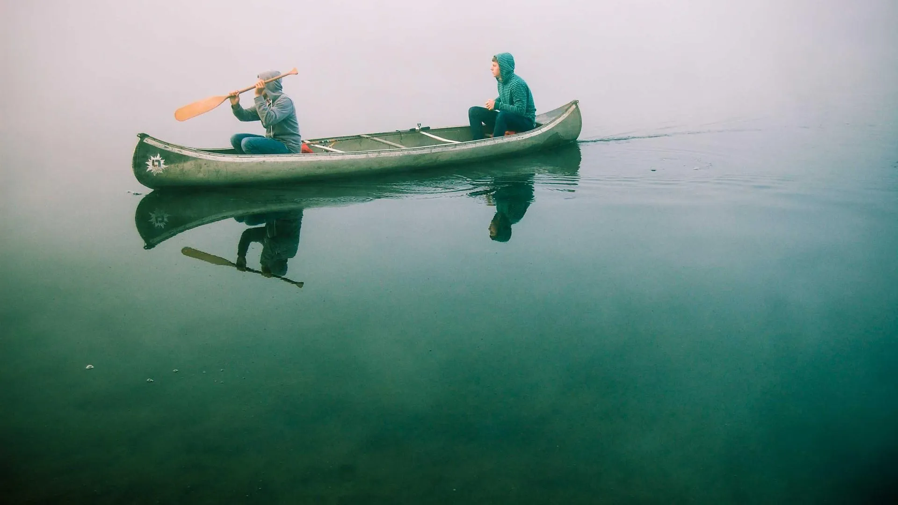
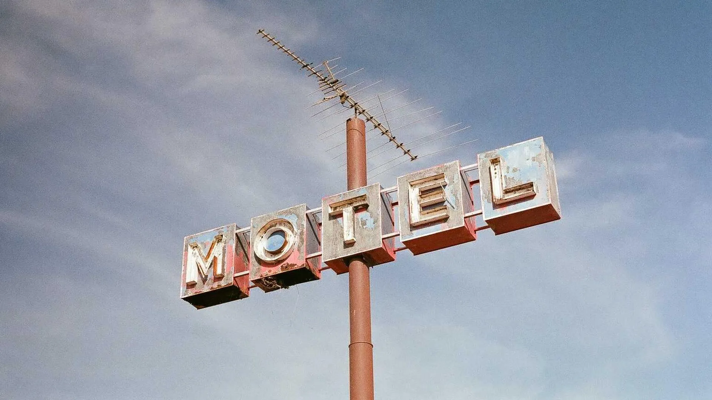
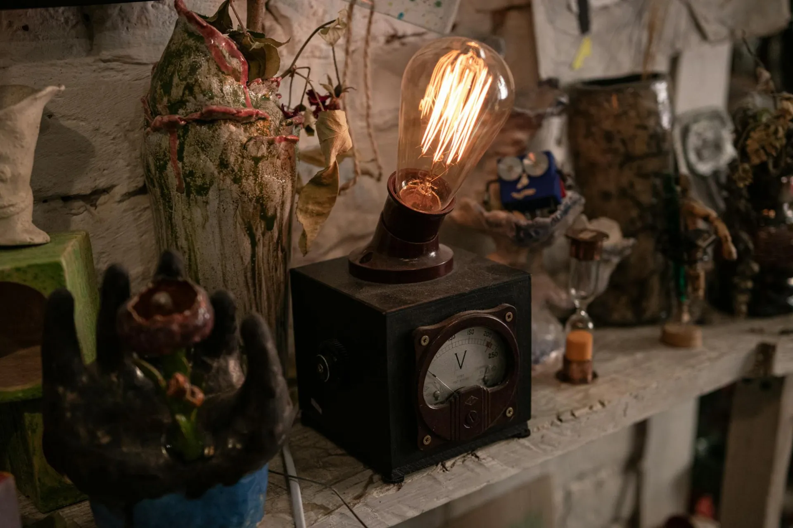

Every moment at MERIDIAN is shaped by the sea — from the first sight of the lighthouse on the horizon to the parting gift of Atlantic sea salt at departure. This is what a stay at the edge of the ocean feels like.

Long before you reach us, the Meridian Light appears on the horizon — a slender tower rising from the headland, its beam still turning as it has for 138 years. This first sighting is intentional; we believe every great experience should begin with anticipation.
Your maritime concierge meets you at the iron gate, where a hand-forged brass key to your room awaits. No check-in desk. No clipboard. Only the sound of the Atlantic and the faint smell of sea salt.

Every room at MERIDIAN has a name, a keeper, and a story. Your concierge introduces your room not with a checklist, but with a narrative — who kept the light from this very window, what storms they witnessed, what entries they made in the keeper's log on nights when the Atlantic showed its teeth.
A framed excerpt from Eleanor Aldrich's memoir sits on your desk. A tide chart of your exact room's view hangs beside the window. These are not decorations. They are the room speaking.

The Keeper's Table, MERIDIAN's Michelin-starred restaurant, occupies the original keeper's mess hall at the base of the lighthouse tower. The original Fresnel lens — removed during the 1958 electrification — now hangs above the dining room, refracting candlelight in 360 directions as it once refracted the Atlantic beam.
Chef Margaux Vidal's menu changes with the daily ocean harvest. Every ingredient has a coastal provenance. Every dish has a keeper's name.
Departure at MERIDIAN is not a checkout. It is a farewell by the sea. Your concierge accompanies you to the tide pools at the base of the headland, where the Atlantic has arranged the stones in patterns unchanged since the lighthouse was built.
You leave with a hand-wrapped package of Cape Meridian sea salt harvested from the very rocks below your room, a tide chart specific to your window's view, and an invitation to return — because guests of MERIDIAN rarely come only once.
Chef Margaux Vidal grew up on the Maine coast, the daughter of a lobsterman and a pastry chef. Her Keeper's Table menu is the most personal thing she has ever made — a daily letter to the ocean that gives her everything she cooks.

MERIDIAN offers a set of curated maritime experiences for guests who wish to explore the headland and the history of the Meridian Light.
Join our keeper at 6am on the observation deck as the Atlantic mist lifts from the headland. A warm tea ceremony accompanies the silent emergence of the sea from the fog — a moment guests describe as "the closest thing to meditation I've experienced."
Ascend the 152 iron steps of the Meridian Tower with our resident maritime historian. Every level tells a chapter of the lighthouse's story — from the base engine room to the working lamp at the apex, still guiding Atlantic vessels each night.
Guided sea kayaking along the Cape Meridian coastline, exploring the granite sea caves and historic fishing coves below the lighthouse. Our guides are certified coastal naturalists with intimate knowledge of the local marine ecosystem.
Private access to the MERIDIAN Maritime Archive — 138 years of keeper's logs, Atlantic weather records, photographs, and letters. A researcher's paradise and a historian's treasure, open to guests by appointment.
The Cape Meridian tide pools are among the most biodiverse on the Maine coast. Our resident marine biologist leads an intimate naturalist walk through the pools at low tide, revealing a world most guests never knew existed at their feet.
Join Chef Margaux Vidal at the Cape Meridian fishing dock at dawn as the night's catch arrives. Then follow the ingredients to the kitchen and the kitchen to the plate — a farm-to-sea experience that concludes with your own tasting at The Keeper's Table.
Every MERIDIAN experience is curated to your stay. Contact our maritime concierge to design your personal coastal itinerary.
Plan Your Journey